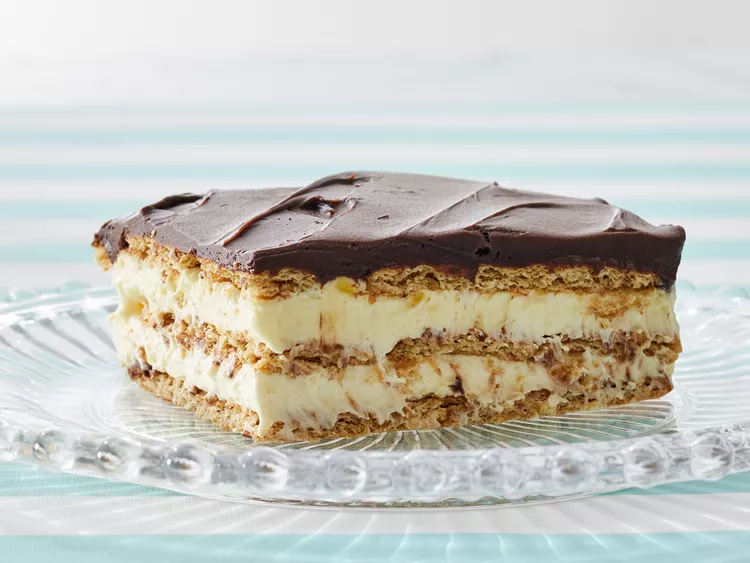

Eclair Cake

This dessert is perfect for summer as it is cold and tasty!
Ingreditents
- Milk
- Whipped topping and pudding mix
- Graham crackers
- Chocolate frosting
Steps
- 1: Stir the milk, whipped topping and pudding mix together.
- 2: Line a baking pan with graham crackers.
- 3: Spread half of the whipped topping mixture on top of the graham crackers.
- 4: Repeat once, ending with a layer of graham crackers.
- 5: Chill the cake, cover with frosting, then chill again.